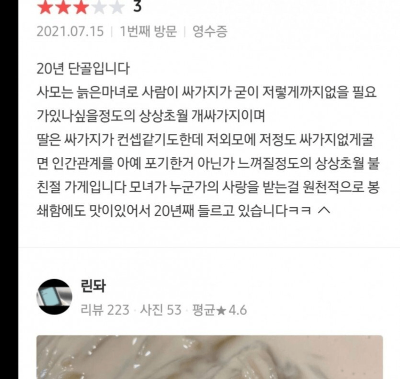

뒤지게 맛있는 콩국수가게
댓글
도대체 얼마나 맛이 있는거냐고오오
나도 김천가면 중국만두라는 집을 꼭 가는데
위생 맛 다 바닥인데 맛하나때문에 감. 맛은 어쩔 수 없다…
위생 맛 다 바닥인데 맛 하나 때문? 무슨 맛을 어쩔 수 없는 거냐?
위생 서비스 바닥인데 맛이 좋다 했어야 했는데
그냥 싸이코패스 되었네
ㅋㅋㅋㅋㅋㅋㅋ 맛없고 더러운걸 좋아하는 청년ㅋㅋㅋㅋㅋㅋ
좀 느끼하지 않냐
여기 ㄹㅇ맛잇긴 함...
나도 아는집인데, 거기 서비스가 안좋은게 아니라, 그냥 사장님이 한국말을 잘 못하심
그나마 아들이 조금 하는 정도라서, 단골이라고 특별히 살가운거 없고 무덤덤하게 응대함
위생?은 그래도 조리 과정이 바로 눈에 보여서 특별히 안좋다고 느낀 적은 없음
맛은 육즙이 풍부하고 진한 풍미가 있는데, 잡내가 하나도 없어서 깔끔함.
포장하러 가면 거의 항상 웨이팅이 있을 정도임
싸가지없다고 해봐야 남들의 11배 12배...
얼마나 맛있는거야
내가볼때 남편이다
난 이거 볼때마다 딸래미는 얼마나 못 생겼으면 저런말을 하나 싶은 생각밖에 안 든다